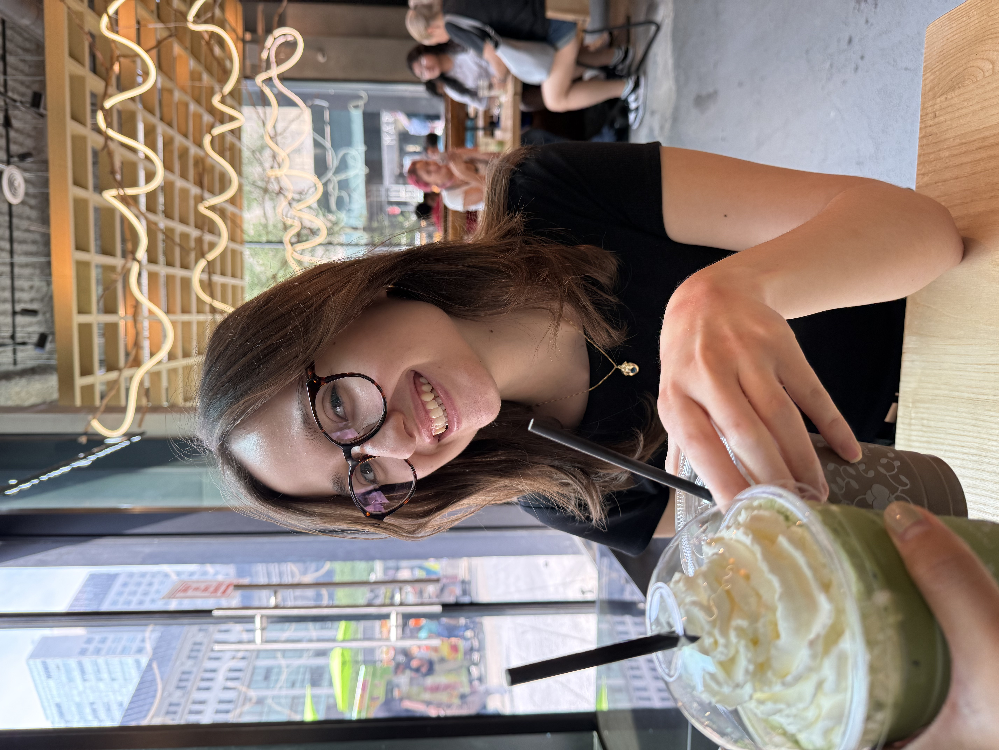
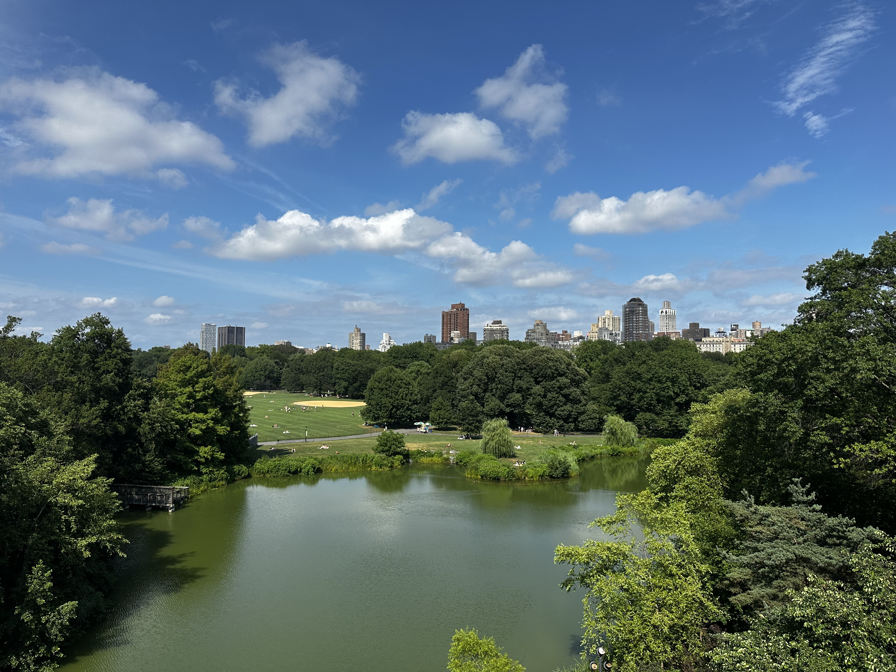
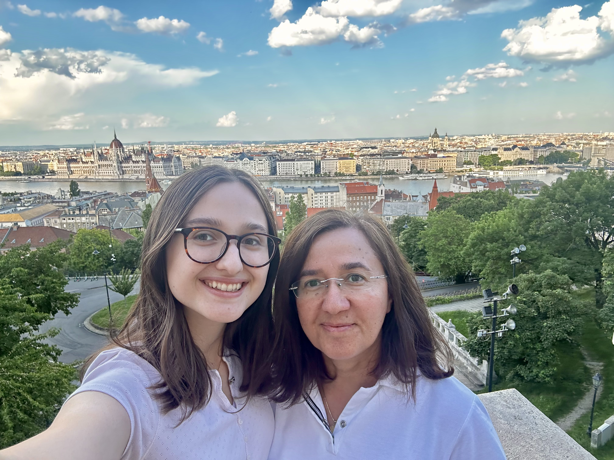
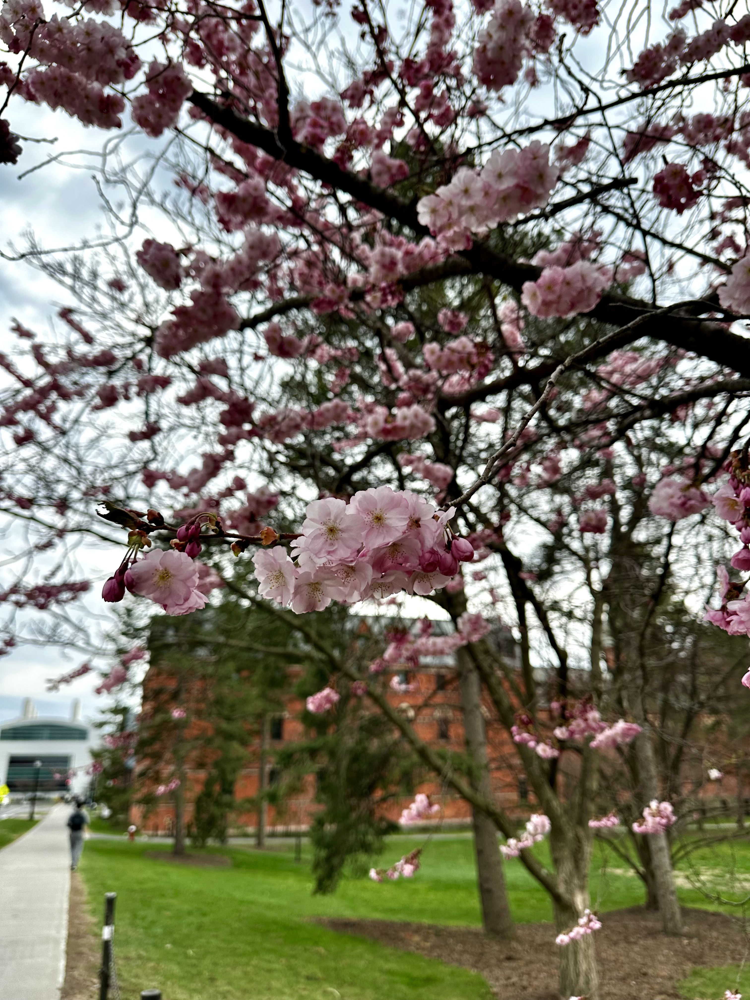
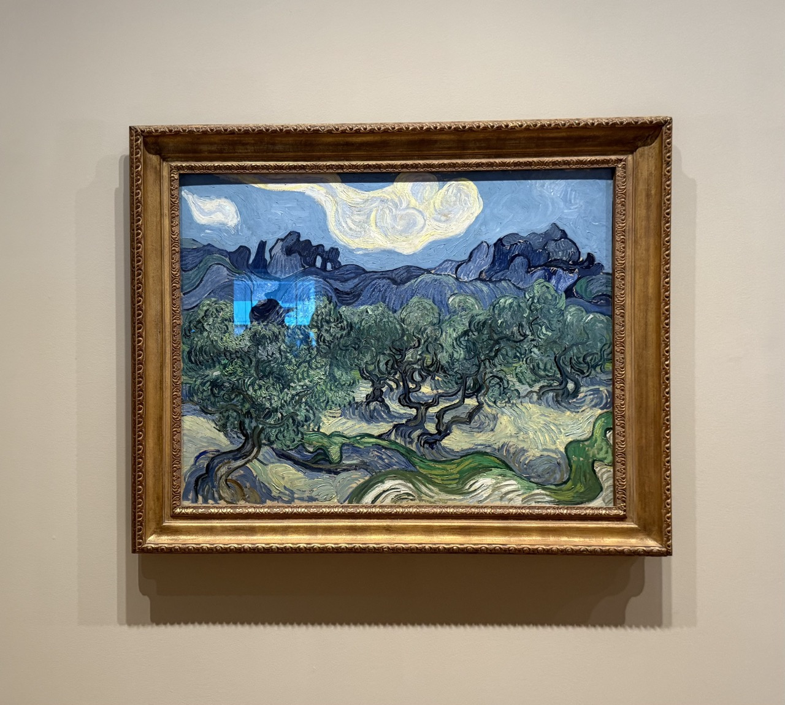
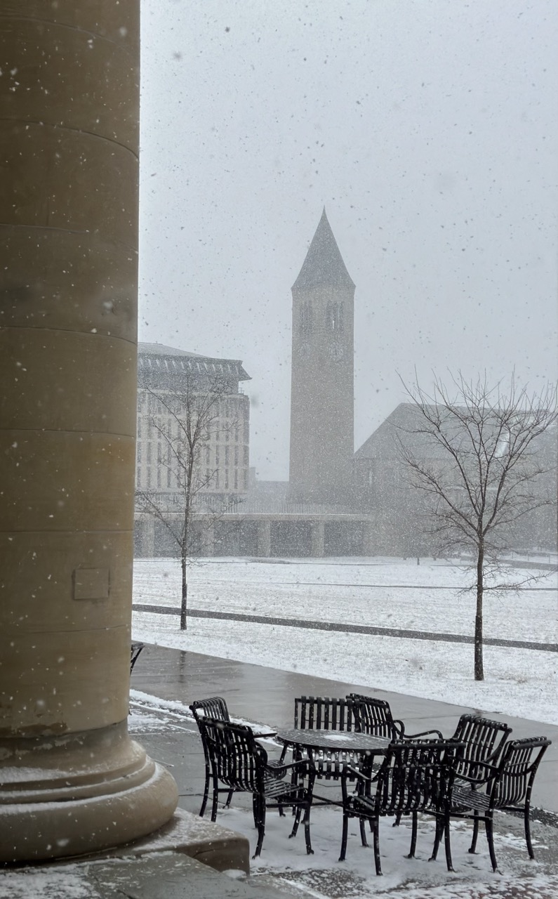

04/2026
I am a recipient of the 2026 NSF GRFP!

//deh-niz beu-leu-nee toor-goot//
researcher, software developer, book lover
Hello! I am an incoming CS PhD student at the University of Maryland (start Fall 2026), with a research focus in natural language processing. I recently graduated from Cornell University with a B.S. in Computer Science.
At Cornell, I was fortunate to work with Prof. Claire Cardie on NLP research. I was a TA for Natural Language Processing (CS 4740) and Mathematical Foundations of Computing (CS 2800), a Data Science Lead for Cornell Data Science, and Course Manager and Lecturer for INFO 1998, an introduction to machine learning. I spent Summer 2023 at CMU REUSE, where I worked with Prof. Claire Le Goues on neural decompilation for malware analysis.
In my free time, I am an avid reader, enjoy learning languages (I have an 850+ day streak on Duolingo), and consume caffeinated beverages of every variety.
04/2026
I am a recipient of the 2026 NSF GRFP!
03/2026
I was named a Merrill Presidential Scholar, awarded to the top 1% of Cornell's graduating class.
06/2025
Started my Software Development Engineer internship at Amazon in New York City.
04/2025
My first paper was accepted to DIMVA 2025 on machine-learning-based decompilation for malware analysis.
01/2025
Became Data Science Lead for Cornell Data Science.
12/2024
I received an Honorable Mention for the 2025 CRA Outstanding Undergraduate Researcher Award.





